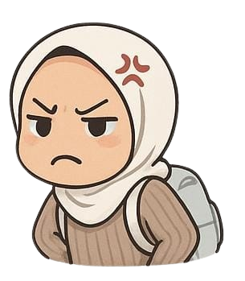
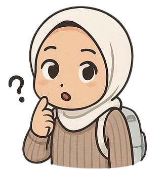
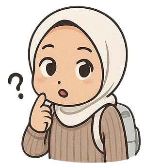
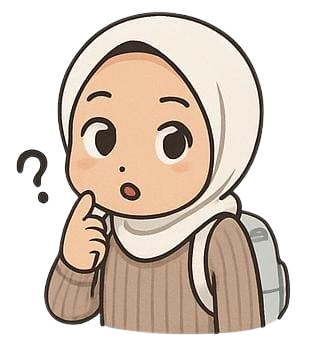
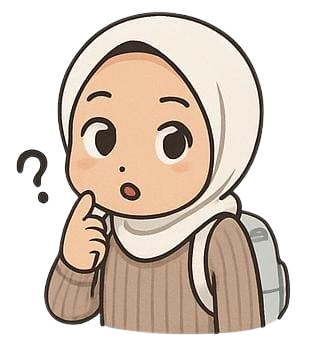

 


Hai Indri 💛
Selama kamu di sana, semoga sehat-sehat selalu ya. Jangan lupa jaga diri, makan yang cukup, dan istirahat kalau capek.
Aku tunggu cerita-cerita kamu bulan depan 🌙
Khusus untuk Indri.

Selama kamu di sana, semoga sehat-sehat selalu ya. Jangan lupa jaga diri, makan yang cukup, dan istirahat kalau capek.
Aku tunggu cerita-cerita kamu bulan depan 🌙
Makasih ya udah jadi bagian hari-hari aku yang seru dan lucu.
Nanti kalau kamu balik, kita ngobrol-ngobrol lagi yaa.
Sampai ketemu bulan depan! 💫
Sampai (kira-kira) tanggal 21 Agustus!